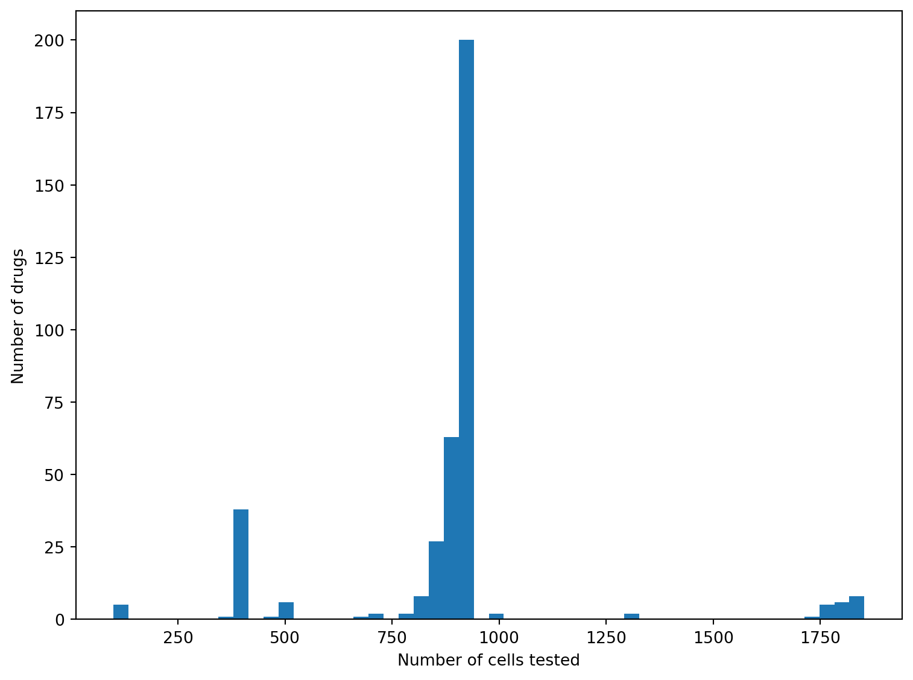

The models for drug sensitivity could be improved. Here I try a few ways
Published
2024-04-03
Show the code
import pandas as pdimport numpy as npimport matplotlib.pyplot as pltimport hdbscanimport seaborn as snsimport lightgbmfrom sklearn.model_selection import train_test_splitfrom sklearn.metrics import mean_absolute_errorfrom sklearn.linear_model import LinearRegressionfrom sklearn.preprocessing import StandardScalerfrom sklearn.manifold import TSNEfrom matplotlib import cmfrom re import subfrom IPython.display import Markdown
In a previous article, I trained some models to predict the sensitivity of tumour cells to drugs. This naive attempt yielded some promising results, but there’s a lot you can do to improve machine learning models. Let’s try a few.
Here’s the data again:
Show the code
# Reading the excel was taking ages. The csv import, with extraneous columns removed, is much fasteric50_data = pd.read_csv("data/GDSC1.csv")ic50_data.head()
COSMIC_ID
DRUG_NAME
LN_IC50
AUC
RMSE
Z_SCORE
0
684057
Erlotinib
3.966813
0.985678
0.026081
1.299144
1
684059
Erlotinib
2.692090
0.972690
0.110059
0.156076
2
684062
Erlotinib
2.477990
0.944459
0.087019
-0.035912
3
684072
Erlotinib
2.033564
0.950758
0.016290
-0.434437
4
687448
Erlotinib
2.966007
0.954778
0.180255
0.401702
The first thing to check is whether you have the data you need.
Show the code
test_counts = ic50_data[['DRUG_NAME', 'COSMIC_ID']] .groupby('DRUG_NAME').agg('count') fig, ax = plt.subplots(figsize = (8,6))ax.hist(test_counts, bins =50)ax.set_xlabel('Number of cells tested')ax.set_ylabel('Number of drugs')plt.tight_layout()plt.show()

Show the code
Markdown(f"Here we can see that of the {len(test_counts)} drugs in the dataset, {int((test_counts >800).sum())} have over 800 tests. This means we can drop a few drugs and be sure we have plenty of data points to predict from.")
Here we can see that of the 378 drugs in the dataset, 322 have over 800 tests. This means we can drop a few drugs and be sure we have plenty of data points to predict from.
We’ll bring in the expression data again. We’ve not looked at this data at all, really. Let’s have a reminder of the shape of it.
Markdown(f"I've not checked whether all of the cells have every gene present in the dataset. Luckily, you can see that there are {rma_expr.drop(columns ='GENE_title').isna().sum().sum()} missing values in the table.")
I’ve not checked whether all of the cells have every gene present in the dataset. Luckily, you can see that there are 0 missing values in the table.
What can we tell about the shape of this data? It would be interesting to know a bit more about how the differences in expression correlate. The first thing to do will be to normalise the data. I’ll mean centre the expression and scale the standard deviation to one for comparison’s sake1.
Now we have the data standardized like this, let’s see if there are any common patterns in the expression data. I’ll use a neat clustering algorithm called HDBSCAN.
In a Jupyter environment, please rerun this cell to show the HTML representation or trust the notebook. On GitHub, the HTML representation is unable to render, please try loading this page with nbviewer.org.
HDBSCAN(metric='manhattan')
Show the code
Markdown(f"There are {clusterer.labels_.max()+1} estimated clusters")
There are 21 estimated clusters
Show the code
tsne = TSNE(n_components =2)gene_embed = tsne.fit_transform(rma_norm_and_scale)def plot_clusters(labels, projection): clust_label_df = pd.DataFrame({'label': labels,'x': projection[:,0],'y':projection[:,1] }) fig, axs = plt.subplots(figsize = (12,8), ncols =2, gridspec_kw = {'width_ratios': (4,2)}, dpi =600) palette = ['grey', *cm.get_cmap('viridis', labels.max()+1).colors]for i inrange(-1, labels.max()+1): label_frame = clust_label_df.loc[clust_label_df['label'] == i] axs[0].scatter(label_frame.x, label_frame.y, color = palette[i+1], alpha =0.3) bar_y = np.arange(labels.max()+2) cluster_sizes = [len([x for x in labels if x == i]) for i inrange(-1, labels.max()+1)] axs[1].set_xscale('log') axs[1].set_xlim((1, max(cluster_sizes))) axs[1].set_yticks([],[])for i in bar_y: axs[1].text(3, bar_y[i], cluster_sizes[i], weight ='bold') axs[1].barh(bar_y, cluster_sizes, color = palette) axs[1].set_xlabel('Genes in cluster') plt.tight_layout()plot_clusters(clusterer.labels_, gene_embed)plt.show()
/tmp/ipykernel_41128/4170233528.py:14: MatplotlibDeprecationWarning:
The get_cmap function was deprecated in Matplotlib 3.7 and will be removed two minor releases later. Use ``matplotlib.colormaps[name]`` or ``matplotlib.colormaps.get_cmap(obj)`` instead.
Footnotes
note: I don’t do this for the models as they don’t really care about scaling↩︎